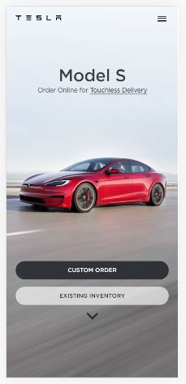

White Space and Clean Design
Tesla
tesla.com
Tesla is very focused on its minimalistic design and they do not take a lot of space.
Rule of Thirds
H&M
H&M.com
H&M is a great example of the rule of thirds. The models are always well centered in the middle third if it is a portrait, or they are aligned to the grid if it is a perspective.
Visual Hierarchy
Amazon
Amazon.com
Amazon does a great job with visual hierarchy by using colors, sizes, and spacing to present the customer with what they want to sell.